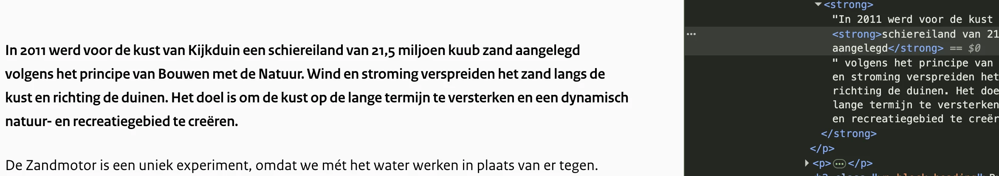

Audit digitale toegankelijkheid van website dezandmotor.nl
Samenvatting
Wij hebben de website dezandmotor.nl onderzocht tussen 25 november en 1 december 2025. Op dit moment zijn 38 van de 55 succescriteria als voldoende beoordeeld. In dit rapport lees je wat er bij de overige 17 nog fout gaat, en hoe je dat kunt verbeteren.
#1 - Tekstalternatief van het logo is niet voldoende
Impact: GrootType: ContentWCAG: 1.1.1EN: 9.1.1.1
Wanneer de website op een klein scherm wordt bekeken, toont het logo bovenaan - dat ook een link is - de volledige tekst "Zandmotor Delflandse Kust".De alt-tekst bevat echter "De zandmotor monitoring". In het tekstalternatief staat dus niet alle tekst die in het logo is te zien is. Dit moet wel. Bezoekers die het plaatje niet kunnen zien, weten dan precies wat daar staat. Omdat dit logo functioneert als een link, is de toegankelijke naam van de link niet gelijk aan de zichtbare tekst in het logo. Daardoor werkt de link niet goed als je hem met je stem wilt activeren. Je noemt dan namelijk de tekst die je in het logo ziet. Als de toegankelijke naam anders is, zal het systeem de link dus niet herkennen.
Oplossing:
Zorg dat de tekst die in het logo zichtbaar is, ook voorkomt in de toegankelijke naam, bij voorkeur vooraan. Het is nog beter als de toegankelijke naam gelijk is aan de zichtbare tekst.
#2 - Tekstalternatief van het logo is niet voldoende
Impact: GrootType: ContentWCAG: 1.1.1EN: 9.1.1.1
In de footer toont het logo de volledige tekst “Rijkswaterstaat Ministerie van Infrastructuur en Waterstaat”, terwijl de alt-tekst alleen “Rijkswaterstaat” bevat. In het tekstalternatief staat dus niet alle tekst die in het logo is te zien is. Dit moet wel. Bezoekers die het plaatje niet kunnen zien, weten dan precies wat daar staat.
Oplossing:
Verander de alt-tekst zodat de volledige tekst van het logo erin staat: “Rijkswaterstaat Ministerie van Infrastructuur en Waterstaat”.
Op deze website staat het hoofdmenu in de header links om van taal te wisselen: “NL” en “EN”. De actieve taallink heeft een afwijkend visueel uiterlijk. Dit onderscheid wordt niet programmatisch overgebracht in de code. Bezoekers die de pagina laten voorlezen, hebben daardoor geen toegang tot deze informatie. Zie bijvoorbeeld de pagina's: https://dezandmotor.nl/, https://dezandmotor.nl/updates/ en https://dezandmotor.nl/en/research/.
Oplossing:
Zorg voor een andere manier om deze informatie over te dragen, zodat ook slechtziende of blinde bezoekers dit kunnen begrijpen. Voeg bijvoorbeeld aria-current="true" toe aan de actieve link.
#4 - Bij 400% zoom is een horizontale scrollbar aanwezig
Wanneer de pagina’s van de website worden bekeken met een schermresolutie van 1280 × 1024 pixels en een zoomniveau van 400%, verschijnt er een horizontale schuifbalk. Deze balk wordt zichtbaar wanneer het mobiele menu is geopend en het submenu “Over de Zandmotor” is uitgeklapt.
Horizontaal scrollen is echter niet toegestaan, ook niet wanneer de viewport is ingesteld op of ingezoomd tot 320 CSS-pixels breed (voor verticale inhoud) of 256 CSS-pixels hoog (voor horizontale inhoud).
Zorg ervoor dat alle tekst binnen het scherm past. Alleen wanneer horizontaal én verticaal scrollen noodzakelijk is voor de betekenis of het gebruik van de inhoud, mag het wel. Uitzonderingen zijn tabellen, betekenisvolle afbeeldingen en kaarten. Binnen deze elementen mag worden gescrold om ze leesbaar te houden.
Oplossing:
Controleer of horizontaal scrollen nodig is. Als dat niet zo is, zorg er dan voor dat horizontaal scrollen bij inzoomen wordt voorkomen.
#5 - Contrast tussen focusindicator en achtergrond is te laag
Op de pagina’s van de website krijgen links een gele focusrand (#FFD431) wanneer ze met het toetsenbord de focus krijgen. De contrastratio tussen deze focusrand en de lichtgrijze achtergrond (#FAFAFA) is slechts 1,4:1. Hierdoor is het voor mensen met een visuele beperking of kleurenblindheid moeilijk of zelfs onmogelijk om de focus te zien.
Op https://dezandmotor.nl/ is dit goed te zien bij de links “Waar” en “Niet waar”, waar de gele rand nauwelijks opvalt tegen de lichtgrijze achtergrond. Hetzelfde probleem doet zich voor bij de links “Onderzoek naar duinerosie” en “Podcast: De Zandmotor werkt door als wij slapen”.
Gebruik voor de focusindicator een kleur met een contrast van minimaal 3,0:1 ten opzichte van de achtergrond.
#6 - Submenu’s niet te openen met toetsenbord
Impact: GrootType: TechniekWCAG: 2.1.1EN: 9.2.1.1
Het hoofdmenu in de header bevat de links “Over de Zandmotor” en “Strandbezoekers”, maar de bijbehorende submenu’s kunnen niet met het toetsenbord worden geopend of gebruikt.
Oplossing:
Zorg dat submenu’s volledig met het toetsenbord bedienbaar zijn en dat alle informatie daarin toegankelijk is. De pagina’s waar de hoofdnavigatie-items naartoe linken bevatten namelijk niet alle informatie uit de submenu’s.
#7 - Staat van submenu niet doorgegeven aan schermlezer
Impact: GrootType: TechniekWCAG: 4.1.2EN: 9.4.1.2
Het hoofdmenu in de header bevat de links “Over de Zandmotor” en “Strandbezoekers” met pijltjesiconen die submenu’s aanduiden, maar deze iconen hebben geen alternatieve tekst. Het pijltje geeft informatie weer ('er is een submenu'), die informatie moet ook beschikbaar zijn voor bezoekers die de afbeelding niet kunnen zien. Dat is nu niet het geval omdat de alternatieve tekst ontbreekt. Daarnaast moet hulpsoftware kunnen bepalen of het submenuzichtbaar of verborgen is.
Oplossing:
Gebruik hiervoor het aria-expanded-attribuut. Andere oplossingen zijn mogelijk.
#8 - Knop bestaat alleen uit afbeelding, maar er is geen alternatieve tekst
In de header van de website staat op kleine schermen een knop met drie horizontale lijnen om het navigatiemenu te openen. In dit menu staan items met pijltjes om submenu’s te openen, maar deze pijltjes hebben geen tekstalternatief. Wanneer een knop uitsluitend uit een afbeelding bestaat, moet de alternatieve tekst de functie van de knop beschrijven. Omdat deze interactieve afbeeldingen geen tekstalternatie hebben, hebben de knoppen feitelijk geen inhoud. Dit leidt ook tot afkeur op succescriterium 4.1.2.
Oplossing:
Voeg een beschrijving toe via een title-element in een svg, een aria-label of visueel verborgen toegankelijke tekst.
#9 - Kop-element gebruikt voor tekst die geen kop is
Impact: MediumType: ContentWCAG: 1.3.1EN: 9.1.3.1
Op de pagina https://dezandmotor.nl/ staan teksten die geen koppen zijn, maar die onjuist zijn gemarkeerd met h3-elementen: “10 jaar Bouwen met de Natuur”, “Onderzoek”, “Resultaten” en “Foto's & video's”. Het kop-element (h2) is niet betekenisvol gebruikt, maar om een visueel effect te bereiken. De tekst die als kop is gemarkeerd, is geen echte kop. Er staat namelijk geen inhoud onder. Door het h2-element te gebruiken, krijgt de tekst wel deze betekenis. Kop-elementen zijn bedoeld om structuur te geven aan de informatie op een pagina. Gebruikers van schermlezers vertrouwen op koppen om te navigeren en de opbouw van de pagina te begrijpen. Gebruik kop-elementen daarom niet alleen om een visueel effect te bereiken, zoals een grotere, schuin- of vetgedrukte tekst. Zorg dat de tekst die je in een kop-element zet ook echt de functie van kop of tussenkop heeft.
Op de pagina https://dezandmotor.nl/ zijn de teksten "Onderzoek naar duinerosie" en "Podcast: De Zandmotor werkt door als wij slapen" niet gemarkeerd als koppen. Bezoekers die hulpsoftware gebruiken, hebben niets aan een kop die er wel uitziet als een kop maar niet als zodanig is gemarkeerd. Via echte koppen kunnen zij de inhoud scannen of snel naar een sectie springen, maar dat werkt alleen als de kop ook in de code staat. Wanneer koppen alleen visueel zijn vormgegeven (bijvoorbeeld vetgedrukt), ontstaat bovendien een ander probleem: de structuur in de code wijkt dan af van de visuele structuur. Op deze pagina staat een instructie hoe je zelf koppen op een webpagina kunt testen: https://properaccess.nl/zo-controleer-je-de-koppenstructuur-van-je-website/.
Oplossing:
Voorkom dit door koppen altijd te markeren met het juiste HTML-element, op het juiste kopniveau: h1, h2, h3, h4, h5 of h6. Meestal kun je het kopniveau kiezen via de content-editor in je CMS. De HTML-code voor de kop wordt dan automatisch toegepast.
#11 - Toetsenbordfocus is niet zichtbaar
Impact: GrootType: TechniekWCAG: 2.4.7EN: 9.2.4.7
Op de pagina https://dezandmotor.nl/ is de toetsenbordfocus niet zichtbaar op de links “Onderzoek”, “Resultaten” en “Foto's & video's”. De toetsenbordfocus moet altijd zichtbaar zijn op interactieve elementen zoals links, knoppen en invoervelden. Bezoekers die met het toetsenbord navigeren, moeten kunnen zien waar ze zich op de pagina bevinden. Anders weten ze niet wanneer ze op Enter moeten drukken om een element te activeren.
Het volgende is een advies, maar het kan de toegankelijkheid van de website ver beteren. Op de pagina https://dezandmotor.nl/ staan artikelen met de zichtbare teksten "Onderzoek naar duinerosie" en "Podcast: De Zandmotor werkt door als wij slapen". Deze functioneren als links, maar hun toegankelijke namen zijn extreem lang en bevatten de zichtbare tekst pas helemaal aan het einde. De link "Onderzoek naar duinerosie" heeft bijvoorbeeld als toegankelijke naam een zeer uitgebreide tekst die eindigt op “Onderzoek naar duinerosie”. Dit maakt het lastig voor bezoekers die spraakgestuurde software gebruiken, omdat zij links doorgaans activeren door de zichtbare tekst uit te spreken. Hetzelfde probleem doet zich voor op de pagina: https://dezandmotor.nl/updates/.
Oplossing:
Zorg dat de zichtbare linktekst aan het begin van de toegankelijke naam staat, of maak beide identiek. Hierdoor kunnen bezoekers die spraakherkenningssoftware gebruiken de links eenvoudig activeren.
#13 - Alternatieve tekst van afbeelding is niet betekenisvol
Impact: MediumType: ContentWCAG: 1.1.1EN: 9.1.1.1
Op de pagina https://dezandmotor.nl/dont-respond-to-the-past-but-build-for-the-future/ staat onder de kop "'DON’T RESPOND TO THE PAST, BUT BUILD FOR THE FUTURE'" een afbeelding met als alternatieve tekst "henk-ovink-3". Deze tekst beschrijft de afbeelding onvoldoende. Afbeeldingen die informatie overdragen moeten een betekenisvolle alternatieve tekst hebben. In die tekst wordt de belangrijke informatie uit de afbeelding beschreven.
Oplossing:
Voeg een beschrijvende alternatieve tekst toe aan het alt-attribuut.
strong-element is gebruikt voor opmaak
Impact: KleinType: ContentWCAG: 1.3.1EN: 9.1.3.1
Op de pagina https://dezandmotor.nl/dont-respond-to-the-past-but-build-for-the-future/, onder de kop "'DON’T RESPOND TO THE PAST, BUT BUILD FOR THE FUTURE'", worden strong-elementen onjuist gebruikt voor opmaak. De alinea die begint met “What would the Sand Motor be without its ambassadors ...” is in meerdere strong-elementen geplaatst om de tekst vet te maken.
Oplossing:
Verwijder de onnodige strong-elementen en gebruik CSS om de tekst vet te maken.
strong-element in plaats van kop-element
Impact: MediumType: ContentWCAG: 1.3.1EN: 9.1.3.1
Op de pagina https://dezandmotor.nl/dont-respond-to-the-past-but-build-for-the-future/ zijn de teksten “Integral questioning”, “Repairing or building?”, “Columbus’s Egg” en “Investing and learning” onjuist gemarkeerd met een strong-element in plaats van met een kop-element. Het strong-element is niet bedoeld om koppen mee te markeren. Gebruik daarvoor altijd een kop-element zoals h2. Koppen structureren de tekst, en alleen wanneer ze correct als kop zijn gemarkeerd, herkent hulpsoftware hun betekenis. Het strong-element is wél geschikt om nadruk te geven aan enkele woorden of een zinsdeel.
Oplossing:
Verwijder het strong-element en gebruik de juiste kop-elementen om deze koppen te markeren, zoals h2 of h3.
#14 - De primaire taal is Nederlands, maar de inhoud is in het Engels
Op de pagina https://dezandmotor.nl/dont-respond-to-the-past-but-build-for-the-future/ is de hoofdinhoud in het Engels, terwijl de header en de footer in het Nederlands staan. De primaire taal van de pagina is ingesteld op Nederlands (lang="nl-NL"). Hierdoor spreken schermlezers de Engelse tekst verkeerd uit, omdat zij standaard de uitspraakregels van de primaire taal gebruiken. Alleen wanneer in de code wordt aangegeven dat een tekst in een andere taal is geschreven, schakelt een schermlezer over. De Engelstalige delen worden nu dus met een Nederlandse uitspraak voorgelezen. Ditzelfde probleem komt voor bij de Engelse tekst in het HTML-element: “'DON’T RESPOND TO THE PAST, BUT BUILD FOR THE FUTURE'”.
Oplossing:
Geef in de code aan dat de Engelstalige inhoud een taalwisseling bevat door lang="en" toe te voegen aan een overkoepelend HTML-element. Dan lezen schermlezers deze tekst met de juiste uitspraak voor.
Op de pagina https://dezandmotor.nl/downloads/ zijn de paginatieknoppen “Vorige” en “Volgende” onder de resultaten wel visueel gegroepeerd, maar niet in de HTML-structuur. Als voor ziende bezoekers duidelijk is dat elementen — zoals de paginering — bij elkaar horen, moet die groepering ook in de HTML-code zijn opgenomen.
Oplossing:
Neem de pagineringsknoppen bijvoorbeeld op in een ul-element, zodat de groep ook in de code correct wordt weergegeven. Hulpsoftware begrijpt dan de semantische relatie tussen de knoppen. Andere oplossingen zijn eveneens mogelijk.
#16 - De focusvolgorde in de tabbladen werkt niet zoals verwacht
Op de pagina https://dezandmotor.nl/downloads/ staan tabbladen met verborgen inhoud die zichtbaar wordt wanneer een bezoeker op een tabknop klikt. De toetsenbordnavigatie werkt echter niet zoals verwacht. Tabbladen bestaan uit tabknoppen en tabpanelen. Eén tabpanee is zichtbaar. De overige zijnverborgen.
Wanneer een gebruiker een tab activeert (met muis of toetsenbord), moet de inhoud van het bijbehorende tabpaneel verschijnen. Met de pijltjestoetsen navigeer je tussen de tabknoppen. Zodra de toetsenbordfocus het actieve tabblad bereikt, moet de focus automatisch naar de inhoud van het gekoppelde tabpaneel gaan. Dat is de verwachte en correcte focusvolgorde.
Oplossing:
Zorg dat de toetsenbordfocus naar het juiste tabpaneel verplaatst zodra een tab wordt geactiveerd, zodat de focusvolgorde logisch is. Lees meer hierover op https://www.w3.org/WAI/ARIA/apg/patterns/tabs/.
#17 - Volgorde toetsenbordfocus is niet logisch
Impact: GrootType: TechniekWCAG: 2.4.3EN: 9.2.4.3
Op de pagina https://dezandmotor.nl/downloads/ staan onder de resultaten navigatieknoppen met de teksten “Vorige” en “Volgende”. Wanneer deze knoppen worden geactiveerd, verplaatst de toetsenbordfocus zich niet naar de nieuw weergegeven resultaten, maar gaat deze door naar de volgende interactieve elementen op de pagina. Dit is geen logische volgorde.
Bij toetsenbordnavigatie moeten interactieve elementen, zoals knoppen en links, in een logische volgorde focus krijgen. Anders kunnen bezoekers die alleen met het toetsenbord navigeren — bijvoorbeeld mensen met een motorische of visuele beperking of een leesstoornis — de pagina moeilijker gebruiken.
Oplossing:
Zorg dat bij het activeren van de knoppen de toetsenbordfocus na het actveren van de knoppen wordt verplaatst naar de nieuw weergegeven resultaten.
#18 - Er zijn links met dezelfde tekst maar een andere bestemming
Impact: MediumType: ContentWCAG: 2.4.4EN: 9.2.4.4
Op de pagina https://dezandmotor.nl/downloads/ komen meerdere links met de tekst "Download" voor, maar ze verwijzen naar verschillende bestemmingen. Hierdoor kunnen bezoekers in de verwarring raken, vooral wanneer zij met een schermlezer navigeren.
Oplossing:
Zorg dat links met dezelfde tekst ook naar dezelfde bestemming leiden. Als de bestemming verschilt, moet de linktekst dat duidelijk maken.
#19 - Naam van de knop beschrijft niet wat de knop doet
Impact: GrootType: TechniekWCAG: 2.4.6EN: 9.2.4.6
Op de pagina https://dezandmotor.nl/downloads/ hebben de knoppen met de teksten "Vorige" en “Volgende” de functie om tussen de resultaten te wisselen. Deze functie wordt echter niet duidelijk uit de knoptekst, vooral niet voor schermlezers. Een blinde bezoeker weet daardoor niet wat deze knoppen precies doen.
Op de pagina https://dezandmotor.nl/downloads/ staat een sectie die eruitziet en werkt als tabbladen. Wanneer een bezoeker op een tabknop klikt (bijvoorbeeld “Rapporten”), verschijnt nieuwe inhoud. De elementen met role="tabpanel"hebben echter geen toegankelijke naam. Er is geprobeerd toegankelijke die toe te voegen met het attribuut aria-labelledby, maar de tabknoppen waarnaar wordt verwezen missen de vereiste unieke id-attributen. Daarnaast wordt aria-labelledby toegepast op div-elementen binnen de tabpanelen, terwijl deze geen toegankelijke naam nodig hebben omdat ze geen interactieve componenten of landmarkgebieden hebben. Dit zorgt voor onnodige complexiteit en kan hulpsoftware in verwarring brengen.
Oplossing:
Voorzie elk element met role="tabpanel" van een toegankelijke naam door een correct aria-labelledby-attribuur toe te voegen dat verwijst naar de unieke id van de bijbehorende tabknop. Verwijder de overbodige aria-labelledby-attributen van div-elementen die alleen tabpanel-inhoud bevatten.
#21 - Er is geen relatie tussen de tabknop en de tabinhoud
Op de pagina https://dezandmotor.nl/downloads/ staat een sectie die eruitziet en werkt als tabbladen. Wanneer een bezoeker op een tabknop klikt (bijvoorbeeld “Rapporten”), verschijnt nieuwe inhoud. In de HTML-code staan de elementen in deze volgorde: knop, knop, knop, knop, paneel, paneel, paneel, paneel. Daardoor kan hulpsoftware niet bepalen welke knop bij welk paneel hoort. De elementen met role="tab"hebben wel een aria-controls-attribuut, maar de tabpanelen missen het bijbehorende id waarnaar wordt verwezen.
Oplossing:
Zorg dat elk element met role="tab" een aria-controls-attribuut heeft dat verwijst naar het id-attribuut van het bijbehorende tabpanel.
#22 - Alternatieve tekst van een afbeelding is leeg
Impact: MediumType: ContentWCAG: 1.1.1EN: 9.1.1.1
Op de pagina https://dezandmotor.nl/hoe-de-zandmotor-blijft-veranderen/ staan onder de kop “Hoe zie jij de Zandmotor veranderen?” twee afbeeldingen met een leeg ‘alt’-attribuut. Afbeeldingen die informatie overdragen, moeten een tekstalternatief hebben. De alternatieve tekst mag dus niet leeg zijn. Hierdoor kan een schermlezer de informatie uit de afbeelding overbrengen aan een blinde bezoeker. Ditzelfde probleem wordt waargenomen bij de afbeelding onder de kop “Wat gebeurt er met het duinmeer?”.
Oplossing:
Voeg een beschrijvende alternatieve tekst toe aan het alt-attribuut.
strong-element is gebruikt voor opmaak
Impact: KleinType: ContentWCAG: 1.3.1EN: 9.1.3.1
Op de pagina https://dezandmotor.nl/hoe-de-zandmotor-blijft-veranderen/, onder de kop "Hoe de Zandmotor blijft veranderen", wordt het strong-element onjuist gebruikt voor opmaakdoeleinden. De volledige alinea die begint met “De vorm van de Zandmotor ...” is in een strong-element geplaatst om de tekst vet te maken.
Oplossing:
Verwijder de onnodige strong-elementen en gebruik CSS om de tekst vet te maken.
em-element is gebruikt voor opmaak
Impact: KleinType: ContentWCAG: 1.3.1EN: 9.1.3.1
Op de pagina https://dezandmotor.nl/hoe-de-zandmotor-blijft-veranderen/, onder de kop “Hoe gaat het met de duinvorming?”, wordt het em-element onjuist gebruikt voor opmaak. Dit gebeurt bij de tekst: “Duinvorming aan de zuidkant van de Zandmotor. De afrastering is een stuk zeewaarts verplaatst om de nieuwe duintjes te beschermen (foto juli 2015).” Het em-element heeft echter een semantische functie: het geeft aan dat een deel van de tekst extra nadruk krijgt. Daarom mag het niet worden gebruikt voor alleen een visueel effect, zoals cursieve tekst.
Oplossing:
Verwijder de onnodige em-elementen en gebruik CSS om de tekst schuingedrukt te maken.
Op de pagina https://dezandmotor.nl/updates/ ontbreekt voldoende context bij de pagineringslinks. Voor ziende bezoekers is duidelijk dat “1”, “2”, “3” enzovoort paginanummers voorstellen, maar dit is niet duidelijk voor schermlezers. Voor ziende bezoekers is het duidelijk dat dit paginanummers zijn, maar voor slechtziende bezoekers en bezoekers die een schermlezer gebruiken, is het niet altijd duidelijk dat dit links naar volgende pagina’s zijn.
Oplossing:
Je verbetert dit door de linkteksten aan te vullen met het (visueel verborgen) woord "pagina”.
Wanneer de pagina https://dezandmotor.nl/onderzoek-naar-duinerosie/ wordt bekeken met een schermresolutie van 1280 × 1024 pixels en een zoomniveau van 400%, verschijnt er een horizontale schuifbalk. Horizontaal scrollen is echter niet toegestaan, ook niet wanneer de viewport is ingesteld op of ingezoomd tot 320 CSS-pixels breed (voor verticale inhoud) of 256 CSS-pixels hoog (voor horizontale inhoud).
Zorg ervoor dat alle tekst binnen het scherm past. Alleen wanneer horizontaal én verticaal scrollen noodzakelijk is voor de betekenis of het gebruik van de inhoud, mag het wel. Uitzonderingen zijn tabellen, betekenisvolle afbeeldingen en kaarten. Binnen deze elementen mag worden gescrold om ze leesbaar te houden.
Oplossing:
Controleer of horizontaal scrollen nodig is. Als dat niet zo is, zorg er dan voor dat horizontaal scrollen bij inzoomen wordt voorkomen.
Op de pagina https://dezandmotor.nl/over-de-zandmotor/ staat onder de kop “Zo werkt de Zandmotor” een video met gesproken tekst. Echter, de ondertitels ontbreken. Ondertitels zijn essentieel voor bezoekers die doof of slechthorend zijn om toegang te krijgen tot alle inhoud van de video.
Oplossing:
Voeg ondertiteling toe aan de video.
#26 - Video bevat tekst of logo’s waarvoor geen alternatief is
Op de pagina https://dezandmotor.nl/over-de-zandmotor/ wordt onder de kop “Zo werkt de Zandmotor” een video getoond. De video bevat op verschillende momenten tekst en logo’s, bijvoorbeeld rond 0:57. Er is echter geen media-alternatief of audiobeschrijving beschikbaar. Deze video bevat visuele informatie (tekst en logo’s) die niet toegankelijk is voor blinde bezoekers. Bezoekers die blind of slechtziend zijn, missen hierdoor informatie.
Oplossing:
Voor succescriterium 1.2.3 kan dit worden opgelost met een geschreven tekst (media-alternatief). Voor succescriterium 1.2.5 is dat echter niet genoeg. Hiervoor moet een audiobeschrijving worden toegevoegd die de visuele elementen in de video beschrijft, zoals namen, functies, logo’s en teksten.
strong-element is gebruikt voor opmaak
Impact: KleinType: ContentWCAG: 1.3.1EN: 9.1.3.1

Op de pagina https://dezandmotor.nl/over-de-zandmotor/, onder de kop “Zo werkt de Zandmotor”, wordt het strong-element onjuist gebruikt voor opmaak. De volledige alinea die begint met “In 2011 werd voor de kust van …” staat in een strong-element, puur om de tekst vet te maken. Het strong-element heeft echter een semantische functie: het geeft aan dat de tekst extra nadruk krijgt. Daarom mag het niet worden gebruikt voor alleen een visueel effect zoals vetgedrukte tekst.
Oplossing:
Verwijder de onnodige strong-elementen en gebruik CSS om de tekst vet te maken.
De pagina https://dezandmotor.nl/podcast-de-zandmotor-werkt-door-als-wij-slapen/ bevat een podcast zonder transcript. Er moet een alternatief zijn voor mensen die het geluid niet kunnen horen: de volledig uitgeschreven tekst (transcriptie). Dit is bijvoorbeeld belangrijk voor mensen die doof of slechthorend zijn.
Oplossing:
Deze tekst kun je op verschillende manieren toevoegen. Eén manier is om de tekst direct bij de podcast te zetten, eventueel visueel verborgen, waarbij de bezoeker de tekst met een link zichtbaar kan maken. De tekst mag ook op een aparte pagina of in een toegankelijke pdf staan, als de link naar de pagina of de pdf direct bij de podcast staat.
#29 - Kleurcontrast van tekst is te laag (tekst kleiner dan 24px en niet vetgedrukt)
Op de pagina https://dezandmotor.nl/podcast-de-zandmotor-werkt-door-als-wij-slapen/ staat grijze tekst (#CCCCCC) op een lichtgrijze achtergrond (#FAFAFA). De contrastratio is te laag: 1,5:1. Dit geldt voor de teksten “Rijkswaterstaat” en “#25 De zandmotor werkt door als wij slapen” onder de podcastwidget.
Oplossing:
Deze tekst is kleiner dan 24px en niet vetgedrukt, daarom moet het contrast minimaal 4,5:1 zijn. Op deze pagina staat een instructie die uitlegt hoe je kleurcontrast kunt testen: https://properaccess.nl/hoe-test-ik-kleurcontrast/.
#30 - Bezoekers die inzoomen tot 400% kunnen niet meer alle tekst lezen
Wanneer de pagina https://dezandmotor.nl/podcast-de-zandmotor-werkt-door-als-wij-slapen/ wordt bekeken met een schermresolutie van 1280 bij 1024 pixels en ingezoomd tot 400%, raakt de volgende linktekst onder de podcastwidget deels uit beeld: “#25 De zandmotor werkt door als wij slapen”.
Oplossing:
Controleer of horizontaal scrollen nodig is. Als dat niet zo is, zorg er dan voor dat horizontaal scrollen bij inzoomen wordt voorkomen.
#31 - De toegankelijke naam van de link beschrijft de linkbestemming niet correct
Impact: GrootType: TechniekWCAG: 2.4.4EN: 9.2.4.4
Op de pagina https://dezandmotor.nl/podcast-de-zandmotor-werkt-door-als-wij-slapen/ opent de link met de tekst "Rijkswaterstaat", onder de podcastwidget, de SoundCloud-pagina van Rijkswaterstaat. De toegankelijke naam is echter ook "Rijkswaterstaat", wat de linkbestemming niet nauwkeurig beschrijft. Ditzelfde probleem doet zich voor bij de link met de tekst “#25 De zandmotor werkt door als wij slapen”. Hierdoor weet een blinde bezoekerniet wat deze links precies doen.
Oplossing:
Voeg beschrijvende toegankelijke naam toe die duidelijk maakt waar de link naartoe leidt.
#32 - Iframe heeft geen toegankelijke naam
Impact: MediumType: ContentWCAG: 4.1.2EN: 9.4.1.2
De pagina https://dezandmotor.nl/podcast-de-zandmotor-werkt-door-als-wij-slapen/ bevat een iframe zonder beschrijving die zichtbaar is voor een schermlezer, omdathet title-attribuut ontbreekt. Iframes moeten een duidelijke beschrijving hebben meestal via het title-attribuut. Hierin moet staan welk type inhoud het is (bijvoorbeeld een podcast of video) en waar het inhoudelijk over gaat. Deze beschrijving moet uniek en betekenisvol zijn, zodat bezoekers met hulpsoftware kunnen bepalen of ze de inhoud willen verkennen.
Oplossing:
Voeg het title-attribuut toe aan het iframe-element en geef daarin aan welk type inhoud het iframe bevat en waar het over gaat.
Op de pagina https://dezandmotor.nl/en/research/, onder de kop “Research”, wordt het strong-element onjuist gebruikt voor opmaak. De volledige alinea die begint met “The Sand Motor is a popular research ...” staat in een strong-element, puur om de tekst vet te maken. Ditzelfde probleem doet zich voor bij de linkteksten onder de kop “Research reports”, zoals “Summary: The Sand Motor 10 years of Building with Nature”.
Oplossing:
Verwijder de onnodige strong-elementen en gebruik CSS om de tekst vet te maken.
strong-element in plaats van kop-element
Impact: MediumType: ContentWCAG: 1.3.1EN: 9.1.3.1
Op de pagina https://dezandmotor.nl/en/research/ zijn in de footer de teksten “Research” en “Beach visitors” onjuist gemarkeerd met een strong-element in plaats van met een kop-element.
Oplossing:
Verwijder het strong-element en gebruik de juiste kop-elementen om deze koppen te markeren, zoals h2 of h3.
#33 - Onzichtbaar element krijgt toetsenbordfocus
Impact: GrootType: TechniekWCAG: 2.4.3EN: 9.2.4.3
Op de pagina https://dezandmotor.nl/en/research/, wanneer deze op een klein scherm wordt bekeken (bijvoorbeeld bij een breedte van 1280 px), komt de toetsenbordfocus terecht op onzichtbare links na de link “Results of 10 years Building with Nature” in de header. De toetsenbordfocus mag niet terechtkomen op onzichtbare interactieve elementen, zoals links, knoppen of formuliervelden, omdat een bezoeker deze dan onbedoeld kan activeren.
Oplossing:
Zorg dat alleen zichtbare elementen die zichtbaar zijn toetsenbordfocus kunnen krijgen en dat de focusvolgorde logisch is.
Op de pagina https://dezandmotor.nl/resultaten-tien-jaar-zandmotor-bij-kijkduin-veelbelovend/, onder de kop "Resultaten tien jaar Zandmotor bij Kijkduin veelbelovend", wordt het strong-element onjuist gebruikt voor opmaak. De volledige alinea die begint met “De evaluatie 10 jaar Zandmotor wijst uit ...” staat in een strong-element, enkel om de tekst vet te maken.
Oplossing:
Verwijder de onnodige strong-elementen en gebruik CSS om de tekst vet te maken.
Voorkom dit door koppen altijd te markeren met het juiste HTML-element, op het juiste kopniveau: h1, h2, h3, h4, h5 of h6. Meestal kun je het kopniveau kiezen via de content-editor in je CMS. De HTML-code voor de kop wordt dan automatisch toegepast.
Op deze pagina staat een instructie hoe je zelf koppen op een webpagina kunt testen: https://properaccess.nl/zo-controleer-je-de-koppenstructuur-van-je-website/.
#35 - Bij 400% zoom is een horizontale scrollbar aanwezig
#36 - Taalwisseling ontbreekt op anderstalige content
Impact: MediumType: ContentWCAG: 3.1.2EN: 9.3.1.2
Op de pagina https://dezandmotor.nl/sitemap/ staan onder de kop "Pagina's" zinnen in een andere taal zonder taalcode: “‘DON’T RESPOND TO THE PAST, BUT BUILD FOR THE FUTURE’” en “‘PHD CANDIDATES AND POST-DOCS KNOW THE SAND MOTOR LIKE THE BACK OF THEIR HAND ‘”. Dit geldt ook voor de tekst “Updates”. Omdat deze teksten geen lokaal lang-attribuut hebben, worden ze uitgesproeken volgens de primaire taal van de pagina (lang=”nl”). Een schermlezer moet echter naar de juiste taal overschakelen, wat alleen gebeurt als de anderstalige tekst een correct lang-attribuut krijgt.
Oplossing:
Voeg een lang-attribuut met de juiste taalcode toe aan het html-element met de anderstalige tekst, bijvoorbeeld vlang="en" voor Engels.
Op de pagina https://dezandmotor.nl/strandbezoekers/ is de tekst “Algemene veiligheidsmaatregelen” onjuist gemarkeerd met een strong-element in plaats van met een kop-element. Het strong-element is niet bedoeld voor koppen; gebruik daarvoor altijd een kop-element, zoals h2. Koppen structureren de tekst, en alleen als ze als kop zijn gemarkeerd, herkennen hulptechnologieën die betekenis. Het strong-element is wél geschikt om nadruk te geven aan enkele woorden of een zinsdeel.
Oplossing:
Verwijder het strong-element en gebruik de juiste kop-elementen om deze koppen te markeren, zoals h2 of h3.
#37 - Pijltjes bij accordeon hebben geen tekstalternatief
Impact: GrootType: TechniekWCAG: 1.1.1EN: 9.1.1.1
Op de pagina https://dezandmotor.nl/weetjes/ zijn secties met verborgen inhoud aanwezig. De pijltjesiconen die de aanwezigheid van de verborgen inhoud aanduiden, hebben geen tekstalternatief. Daardoor weten schermlezers niet dat hier verborgen content aanwezig is. Deze informatie is niet aanwezig in de vorm van een aria-expanded-attribuut of een verborgen tekst.
Oplossing:
Je kunt bijvoorbeeld een van de volgende oplossingen gebruiken:
geef het pijltje een tekstalternatief (een title-element op svg-element of een aria-label)
voeg verborgen tekst toe die verandert als accordeon opent of sluit
gebruik een aria-expanded-attribuut
#38 - De accordeons hebben geen knoppen
Impact: GrootType: TechniekWCAG: 4.1.2EN: 9.4.1.2
Op de pagina https://dezandmotor.nl/weetjes/ staan secties met verborgen inhoud. De elementen die deze verborgen inhoud openen en sluiten hebben niet de juiste toegankelijke rol. De teksten waarmee je accordeondelen kunt in- en uitklappen functioneren als knoppen, maar zijn niet als knop gemarkeerd. Schermlezers moeten de juiste rol kennen om te kunnen uitleggen wat een element doet.
Oplossing:
Zorg dat deze elementen de juiste rol krijgen door het button-element te gebruiken. Dit kan bijvoorbeeld door een kop-element te combineren met een knop, zoals: <h2><button>Titel van de sectie</button></h2>. Meer informatie over dit element staat op deze pagina: https://www.w3.org/WAI/ARIA/apg/patterns/accordion/.
Over dit onderzoek
Leeswijzer
Onze rapporten zijn anders. Bij het bespreken van de gevonden problemen volgen wij niet de structuur van de norm, maar die van jouw website of app. Hierdoor kun je gewoon per pagina of scherm aan de slag gaan. Wel zo makkelijk! Je vindt verderop een overzicht van alle pagina’s met problemen.
We geven je bij elk gevonden issue een paar voorbeelden, maar niet een complete lijst. Controleer zelf of het probleem ook nog op andere plekken voorkomt. Zie het rapport als een leidraad.
Gebruikte norm
Dit onderzoek laat zien in hoeverre de website op dit moment voldoet aan WCAG 2.2, niveau A en AA. WCAG staat voor Web Content Accessibility Guidelines. Dit is de internationale norm voor digitale toegankelijkheid. De Europese norm EN 301 549 bevat alle eisen van WCAG op niveau A en AA.
In dit rapport hebben we korte beschrijvingen van de succescriteria uit de norm opgenomen, met een algemene uitleg erbij. Wil je ze helemaal lezen? Bekijk dan de documentatie van WCAG.
Gebruikte onderzoeksmethode
We gebruiken de onderzoeksmethode WCAG-EM van het W3C. Het proces ziet er als volgt uit:
vaststellen wat binnen en buiten scope valt
vaststellen welke technologieën zijn gebruikt
steekproef (sample) samenstellen
steekproef onderzoeken
gevonden issues beschrijven
Het grootste deel van het onderzoek doen we met de hand. Voor een deel van de toegankelijkheidseisen gebruiken we automatische tools als ondersteuning, zoals axe-core en Chrome Developer Tools.
Belangrijk om te weten
Dit rapport helpt je om de toegankelijkheid van je website te verbeteren. Maar let op: het is geen definitieve, volledige lijst van alle aanwezige toegankelijkheidsproblemen. Dat zit zo:
Het is een steekproef
Ten eerste is het onderzoek gebaseerd op een steekproef. Die is op een betrouwbare manier genomen, en de meeste problemen zullen daardoor zeker aan het licht komen. Toch kan een probleem net buiten de steekproef vallen. Bij een volgend onderzoek kan het wel ontdekt worden.
Op basis van falsificatie
We beoordelen vanuit het principe van falsificatie. Dat houdt in dat we proberen te bewijzen dat iets niet waar is, in plaats van te bevestigen dat het klopt. ‘Voldoet’ betekent daarom dat we geen reden hebben gevonden om een punt af te keuren. Maar als we later wél een reden vinden, kan het alsnog worden afgekeurd.
Voortschrijdend inzicht
Het komt voor dat de beoordeling van een succescriterium op detailniveau verandert. De norm beschrijft namelijk niet élk mogelijk scenario. Samen met andere onderzoeksbureaus overleggen we hoe we met bepaalde situaties omgaan. Zo kan iets dat nu wordt afgekeurd, soms bij een volgend onderzoek worden goedgekeurd en andersom.
Oplossen leidt tot nieuw probleem
Ten slotte kan het gebeuren dat bij het oplossen van een probleem onbedoeld een nieuw toegankelijkheidsprobleem ontstaat. Dat komt dan bij een volgend onderzoek pas naar voren.
Hoe werkt dit rapport?
Bevindingen bekijken en filteren
Alle gevonden toegankelijkheidsproblemen staan onder Gevonden problemen. Je kunt de bevindingen filteren op:
Impact (Groot, Medium, Klein, Advies) — hoe ernstig is het probleem voor de gebruiker?
Type (Content, Techniek) — moet de inhoud of de techniek worden aangepast?
Status (Open, Opgelost) — welke problemen zijn al verholpen?
Voortgang bijhouden
Je kunt je voortgang op twee manieren bijhouden:
CSV-export — exporteer alle bevindingen als CSV-bestand en laad het in een (online) spreadsheet om met je team samen te werken.
Jira-export — exporteer alle bevindingen als Jira-compatibel CSV-bestand. Importeer het via Jira > Issues > Import issues from CSV. Bevindingen worden aangemaakt als bugs met prioriteit op basis van impact.
Registreer in de browser — activeer deze optie om per bevinding bij te houden of het is opgelost. Je voortgang wordt opgeslagen in je browser. Niemand anders kan je resultaat zien. Let op: de voortgang is gekoppeld aan je browser. Als je een andere browser of een ander apparaat gebruikt, begint de telling opnieuw.
Plan van aanpak — download een geprioriteerd plan van aanpak om de gevonden problemen stap voor stap op te lossen. Dit is beschikbaar bij audits vanaf maart 2026.
Link naar een specifieke bevinding delen
Bij elke bevinding verschijnt een link-icoon wanneer je er met de muis overheen gaat. Klik op dit icoon om de directe link naar die bevinding te kopiëren. Je kunt deze link plakken in een e-mail of chatbericht, bijvoorbeeld om een vraag te stellen aan Proper Access over een specifiek punt.